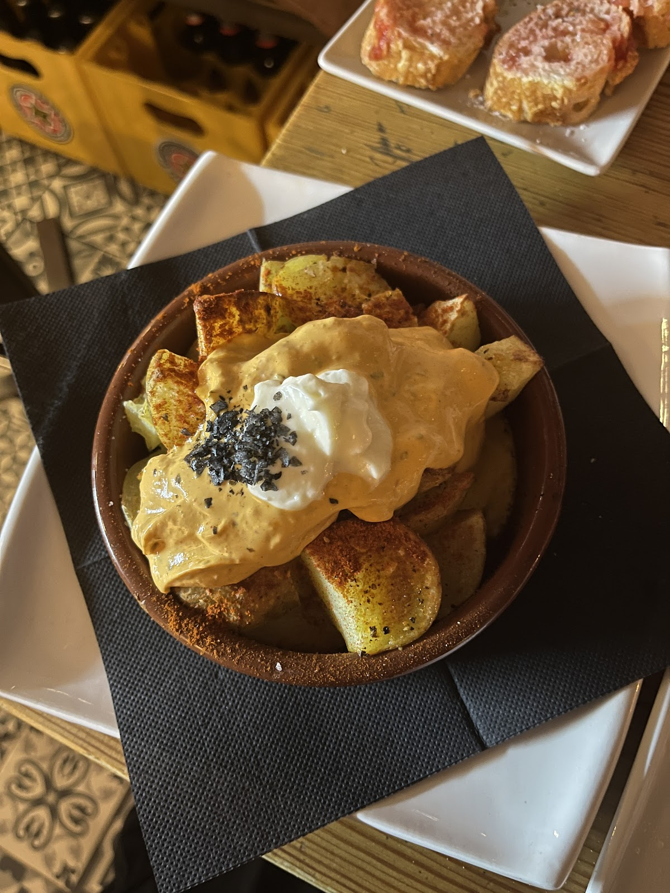

Una vermuteria de Gràcia com les de tota la vida: vermut ben fet, conserves, tapes i un ambient que no trobaràs a la Rambla. Aquí venen els del barri, i es nota.A proper old-school Gràcia vermouth bar: a well-made vermut, tinned seafood, tapas and an atmosphere you won't find on the Rambla. The locals come here, and you can tell.
La nostra especialitat són les patates Puigmartí — patata bullida amb salses que sona senzill però és únic (molts en demanen dues rondes). Vine a fer el vermut.Our signature is the patates Puigmartí — boiled potato with sauces that sounds simple but is one of a kind (people order two rounds). Come and do the vermut ritual.
